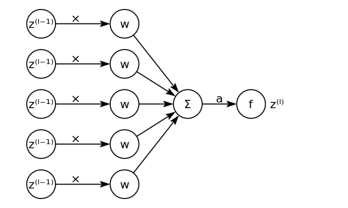
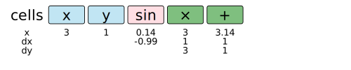
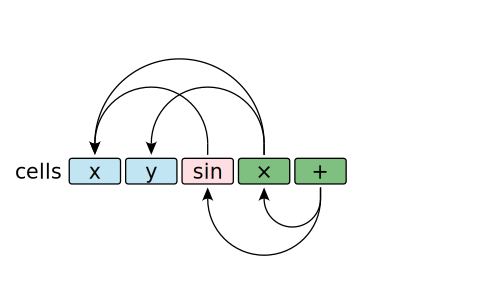

機器如何計算微分/偏微分（下）
前一篇文章的最後介紹了 Forward-Mode Automatic Differential 這個應用 Chain Rule 的技巧，這一篇要來介紹一個反過來的版本 Reverse-Mode Automatic Differential。
Recap: Forward-Mode AD
計算 Foward-Mode AD 的時候，假設要求 \(f(x, y) = sin(x) + x × y\) 在 \((3, 1)\) 對 \(x\) 的偏微分 \(\frac{\partial Y}{\partial x}\)，我們會像這樣由上到下計算：
 Forward-Mode AD 在 Wikipedia 上的示意圖
Forward-Mode AD 在 Wikipedia 上的示意圖
\[\begin{array}{cl} \frac{∂}{∂ x} x&= 1\\[0.5em] \frac{∂}{∂ x} sin(x) &= cos(x) \\[0.5em] \frac{∂}{∂ x} x \cdot y &= 1\\[0.5em] \frac{∂}{∂ x} sin(x) + x \cdot y &= \frac{∂ sin(x)}{∂ x} + \frac{∂ x \cdot y}{∂ x} = cos(x) + 1 \end{array}\]
也就是如果今天有個 \(f\)，而將 \(x_i\) 以外的輸入都是為常數的話，得到 \(f_{x_i} = g_1 \circ g_2 \circ \cdots \circ g_n\)，
- 從 \(\frac{\partial x_i}{\partial x_i} = 1\)，並將其他變數 \(x_j\) 視為常數，
- 照著變數\(x_i\) 的計算過程計算 \(g(x_i)\) 的偏微分（這個例子的第一個 \(g\) 是 \(sin\) 或是 \(x \cdot y\)） 我們可以將 \(\cdot\) 看成 \(mul(x, y)\)，而因為 \(y\) 被視為常數，所以又可以看成一個單變數函數 \(mul_{1}(x) = 1\)。
- 最後求得 \(\frac{\partial}{\partial x_i}f(..., x_i, ...)\)
如果要計算每個變數 \(x_i\) 的偏微分的話，我們就必須重複這樣的動作 \(N\) 次，而計算梯度時就會遇到這個困境。
Reverse-Mode AD
Reverse-Mode AD 則是反過來計算：
 Rerverse-Mode AD 在 Wikipedia 上的示意圖
Rerverse-Mode AD 在 Wikipedia 上的示意圖
\[\begin{array}{cll} \frac{∂ Y}{∂ Y} &= \frac{∂ Y}{∂ sin(x) + x \cdot y} &= 1 \\[0.5em] \frac{∂ Y}{∂ sin(x)} &= \frac{∂ Y}{∂ sin(x) + x \cdot y}\frac{∂ sin(x) + x \cdot y}{∂ sin(x)} &= 1 \cdot 1 \\[0.5em] \frac{∂ Y}{∂ x \cdot y} &= \frac{∂ Y}{∂ sin(x) + x \cdot y}\frac{∂ sin(x) + x \cdot y}{∂ x \cdot y} &= 1 \cdot 1 \\[0.5em] \frac{∂ Y}{∂ x} &= \frac{∂ Y}{∂ sin(x)}\frac{∂ sin(x)}{∂ x} + \frac{∂ Y}{∂ x \cdot y}\frac{∂ x \cdot y}{∂ x} &= 1 \cdot cos(x) + 1 \cdot y \\[0.5em] \frac{∂ Y}{∂ y} &= \frac{∂ Y}{∂ x \cdot y}\frac{∂ x \cdot y}{∂ y} &= 1 \cdot x \end{array}\]
Forward-Mode AD 從 \(\frac{∂ \color{red}x}{∂ x} = 1\) 開始組合，到 \(\frac{∂ \color{red}Y}{∂ x}\) 結束； Reverse-Mode AD 從 \(\frac{∂ Y}{∂ \color{red}Y} = 1\) 開始分解，到 \(\frac{∂ Y}{∂ \color{red}x}\) 結束。
Back Propagation
 類神經的神經元示意圖
{kind=link}
所以這是如何跟類神經網路關聯接一起的？一個簡單的類神經網路為了簡化，我省去了 Bias term \(b^{(l)}\)。
可以這樣表示我這邊使用 \(a\) 表示 summation, \(z\) 表示 activation 的輸出，有些文章會採用反過來的表示方式。
：
\[\begin{aligned} a_i^{(1)} &= \sum_j w^{(1)}_{ij} \cdot x_i & z_i^{(1)} &= f(a_i^{(1)}) \\ a_i^{(2)} &= \sum_j w^{(2)}_{ij} \cdot z_j^{(1)} & z_1^{(2)} &= f(a_i^{(2)}) \\ &\cdots & & \cdots \\ a_i^{(l)} &= \sum_j w^{(l)}_{ij} \cdot z_j^{(l-1)} &z_i^{(l)} &= f(a_i^{(l)}) \end{aligned}\]
接著我們會定義 cost function (或稱為 loss function)，比方說 Mean Squared Error：
\[C(Y, \hat Y) = \frac{1}{n} \sum_i^n \left(Y_i - \hat{Y}_i\right)^2\]
類神經的 Forward Propagation 就是帶入資料 \(X\) 跟權重 \(w\) 計算出預測值 \(z_i^{(l)}\)，而 Back Propagation 就是利用 cost 來找出一組更好 \(w_{ij}\) 來使的 \(C\) 更小。
怎麼做？從 \(\frac{∂ C}{∂ \color{red}C} = 1\) 開始、 \(\frac{∂ C}{∂ \color{red}z_i^{(l)}}, \frac{∂ C}{∂ \color{red}a_i^{(l)}}, \frac{∂ C}{∂ \color{red}w_{ij}^{(l)}}, \frac{∂ C}{∂ \color{red}z_i^{(l-1)}} ...\frac{∂ C}{∂ \color{red}a_i^{(1)}}\)，最後算到 \(\frac{∂ C}{∂ \color{red}w_{ij}^{(1)}}\)，求出每一個 \(\frac{∂ C}{∂ w_{ij}}\) 之後我們就可以利用 Gradient Descent 法來找出更好的 \(w_{ij}\)
\[w_{ij} \leftarrow w_{ij} - \eta \frac{∂ C}{∂ w_{ij}}\]
注意到了嗎？這跟前面所敘述的 Reverse-Mode AD 是一樣的計算過程，這代表我們可以利用它來取代Back Propagation 跟 AD 都應用了 chain rule 來計算，不同的是使用 AD 的技巧後不再需要推導公式。
手動推導的 Back Propagation 演算法。
為什麼類神經要用 Reverse-Mode AD?
Jacobian matrix 是一個 \(f: ℝ^n \rightarrow ℝ^m\) 的所有偏導數所組合而成的矩陣：
\[\mathbf {J} = \begin{bmatrix} \frac {\partial f_{1}}{\partial x_{1}} & \cdots & \frac {\partial f_{1}}{\partial x_{n}}\\[0.5em] \vdots &\ddots &\vdots \\[0.5em] \frac {\partial f_{m}}{\partial x_{1}} & \cdots & \frac {\partial f_{m}}{\partial x_{n}} \end{bmatrix}\]
Reverse-Mode AD 就是一次算一個 row，Forward-Mode AD 則是一次算一個 column。由於類神經網路是一個 \(n \gg m\) 的函數，用 Reverse-Mode AD 有效率了不少。
Implementation
Reverse-Mode AD 的實作比起 Forward-Mode AD 複雜了點，先回來看看前面的\(\frac{∂ Y}{∂ x}\)：
\[\frac{∂ Y}{∂ x} = \textcolor{blue}{\frac{∂ Y}{∂ sin(x)}} \textcolor{green}{\frac{∂ sin(x)}{∂ x}} + \textcolor{blue}{\frac{∂ Y}{∂ x \cdot y}} \textcolor{green}{\frac{∂ x \cdot y}{∂ x}}\]
可以觀察到：
- \(\color{blue}\text{藍色}\)的部份跟計算過程是相反順序的以計算 \(Y = (f \circ g \circ h) (x)\) 的微分 \(\frac{∂ Y}{∂ x}\) 為例，我們需要從後面到前面地求出 \(\frac{∂ Y}{∂ f}, \frac{∂ Y}{∂ g}, \frac{∂ Y}{∂ h}\)，
- \(\color{green}\text{綠色}\)的部份跟計算過程是相同順序的繼續上面的例子，計算綠色的部份需要從前面到後面的求出 \(\frac{∂ h(x)}{∂ x}, \frac{∂ g(h(x))}{∂ h(x)}, \frac{∂ f(g(h(x)))}{∂ g(h(x))}\)。
- 我們需要追蹤一個變數被在哪些地方，上面 \(Y = sin(x) + x \cdot y\) 的例子 \(x\) 就被用 \(sin(x)\) 跟 \(x \cdot y\) 兩處。
Wengert Tape
其中一個作法是使用 Wengert Tape ，這個資料結構追蹤順向計算的過程，Reverse-Mode AD 時則是會反過來計算。這邊的實作參考自 Edward Kmett 所寫的 ad 自動微分函式庫。
注意：為了方便實作跟解釋，我的實作有稍微變化過。
為了簡化，這邊將計算的過程推廣成三種形式： 變數、單變數函數、雙變數函數。
x（或是y） 表示這個計算的輸入節點 \(x, y\)dx（或是dy） 表示輸入對這個計算的影響 \(\frac{∂f}{∂x}, \frac{∂f}{∂y}\)，也就是前述的\(\color{green}\text{綠色}\)部份。ss表示這個計算對於整個計算的影響 \(\frac{∂ Y}{∂ f}\)，也就是前述\(\color{blue}\text{藍色}\)的部份。
from collections import namedtuple
Var = namedtuple('Var', ['ss'])
Un = namedtuple('Un', ['x', 'dx', 'ss'])
Bin = namedtuple('Bin', ['x', 'y', 'dx', 'dy', 'ss'])這樣就可以下面的這段程式來表達 \(sin(x) + x \cdot y \bigg\vert_{x = 3, y = 1}\) 的順向計算過程為了簡化，我省去了當下計算的輸出數值v(\(f(x)\))
這邊我小小的作弊了一下，直接使用 Dict 來方便更新 ss 的值。
 這張圖表示順向計算時所累計的數值
{kind=link}
 這張圖表示節點之間的相依關係
{kind=link}
from math import *
def box(v=0):
return {'value': v}
x = Var(box())
y = Var(box())
sin_x = Un(x, cos(1), box())
x_times_y = Bin(x, y, 1, 3, box())
Y = Bin(sin_x, x_times_y, 1, 1, box(1))Wengert Tape 就是紀錄輸入變數及這一連續的計算過程。
當計算 Reverse-Mode AD時，我們會將 tape 反過來累計： 注意到這邊的實作已經在前面建構這些節點的同時，將順向計算的過程給嵌進去了。
for cell in reversed(tape):
if isinstance(cell, Bin):
cell.x.ss['value'] += cell.ss['value'] * cell.dx
cell.y.ss['value'] += cell.ss['value'] * cell.dy
elif isinstance(cell, Un):
cell.x.ss['value'] += cell.ss['value'] * cell.dxReverse Mode AD 就像這樣在一個 pass 就能算出所有輸入的偏導數
剩下的就是實作一個易用的界面給使用者了，也就是只需要指定順向計算的過程。
>>> x = var(3)
>>> y = var(1)
>>> Y = sin(x) + x * y
>>> Y.value
3.1411200080598674
>>> Y.tape
Tape([<Var object at 0x7f84dbfed198>,
<Unary object at 0x7f84e6968c50>,
<Var object at 0x7f84e3e567b8>,
<Binary object at 0x7f84e0dff4e0>,
<Binary object at 0x7f84dbfed630>])
>>> Y.backprop()
>>> x.sensitivity
0.010007503399554585其他變化
- 另外一個做法是將所有節點表示成一個有向無環圖（DAG; Directed Acyclic Graph），接著做 Topological sort 來計算出順向跟反向的計算順序。
- 可以選擇將記住計算的函數及輸入輸出，而非偏導數的數值 如果我沒弄錯的話， tensorflow 就是以 DAG 表示，用 DFS 來找出計算順序，並採用只儲存函數本身跟輸入輸出的做法。
。 - 可以在變數節點記下名稱，方便事後觀察。
Conclusion
這篇文章介紹了 Reverse-Mode AD 以及實作的方法，學會這些細節雖然沒有讓我更會訓練類神經網路，但也是更了解這些黑盒子底下到底在做些什麼。
Appendix
Example: Softmax Regression
我的「玩具版」 Reverse-Mode AD 實作函數庫放在這邊。
這次以 ML 常用的 iris 資料集作為範例，建構一個 Softmax Regression 來分類這些花朵。
from reverse_ad import *
from sklearn.datasets import load_iris
from sklearn.model_selection import train_test_split
iris = load_iris()
X = iris['data']
Y = iris['target']
X_train, X_test, Y_train, Y_test = train_test_split(X, Y)這邊使用 Softmax Regression 做分類，用 Cross Entropy 做為 loss function。 \[\begin{gathered}
Softmax(X_i) = \frac{exp(X_i)}{\sum_k exp(X_i)} \\
f(X; W, B) = Softmax(W \times X + B) \\
Cost(Y, \hat Y) = \frac{-1}{|Y|}\sum_{y} \sum_{k} y_k \log(\hat{y}_k)
\end{gathered}\]
def softmax(z):
z_exp = [exp(i) for i in z]
sum_z_exp = sum(z_exp)
return [i / sum_z_exp for i in z_exp]
def reg(xs, w, b):
return softmax([sum(w[i][j] * x for j, x in enumerate(xs)) + b[i]
for i in range(3)])
def categorical_cross_entropy(Y, Y_):
loss = sum(sum(k * log(k_) for k, k_ in zip(y, y_)) for y, y_ in zip(Y, Y_))
return -1 * loss / len (Y_)用 Gradient Descent 來找到更好的 \(W\) 跟 \(B\)
這邊需要先對標籤做 one-hot encoding 才會有跟公式輸出一致的維度。
from sklearn.metrics import accuracy_score
Y_encoded = OneHotEncoder().fit_transform(Y_train.reshape(-1, 1)).todense().tolist()
w = [[var(0) for _ in range(4)] for _ in range(3)]
b = [var(0) for _ in range(3)]
lr = 0.1 使用 Reverse Mode AD 就不再需要每一個參數都再計算一次。
for epoch in range(1000):
Y_predicted = [reg(x, w=w, b=b) for x in X_train]
loss = categorical_cross_entropy(Y_encoded, Y_predicted)
loss.backprop()
for i in range(3):
b[i] -= lr * b[i].sensitivity
for j in range(4):
w[i][j] -= lr * w[i][j].sensitivity
if epoch % 10 == 0:
accuracy = accuracy_score(Y_test, [tolabel(reg(x, w=w, b=b)) for x in X_test])
print(f'{epoch: 5d} loss {loss.value} acc {accuracy}')跑起來成果像是這樣：
0 loss 1.098612288668108 acc 0.34210526315789475
10 loss 0.84323472659183 acc 0.6578947368421053
20 loss 0.716723873894274 acc 0.6578947368421053
30 loss 0.6493242141034026 acc 0.6578947368421053
40 loss 0.6030807982006535 acc 0.6578947368421053
50 loss 0.5661515656844388 acc 0.6578947368421053
60 loss 0.5340659822896819 acc 0.6578947368421053
70 loss 0.5047568856139167 acc 0.6578947368421053
80 loss 0.4771475569375817 acc 0.6578947368421053
90 loss 0.45064476873213055 acc 0.6578947368421053
100 loss 0.42493012219412674 acc 0.6578947368421053
110 loss 0.39987107522910936 acc 0.7105263157894737
120 loss 0.37549205547113373 acc 0.7105263157894737
130 loss 0.3519881981460512 acc 0.7368421052631579
140 loss 0.3297816399879364 acc 0.7631578947368421
150 loss 0.30960905639139913 acc 0.868421052631579
160 loss 0.2925264903210591 acc 0.9210526315789473